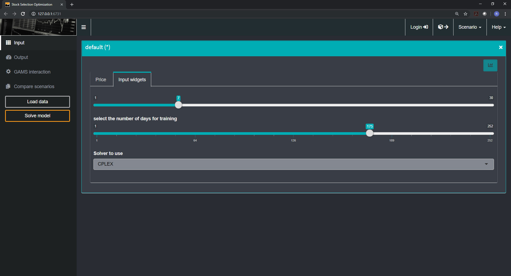
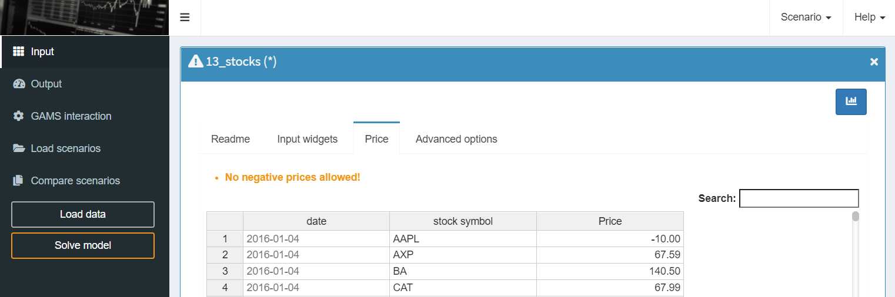
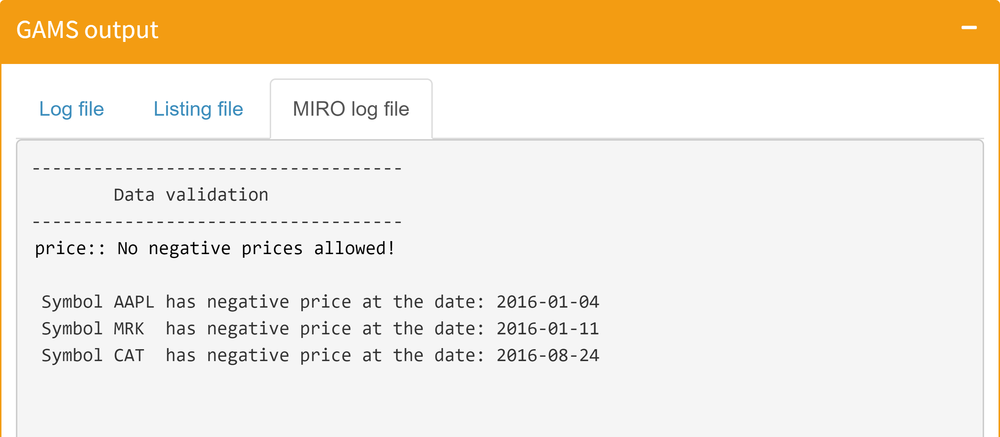
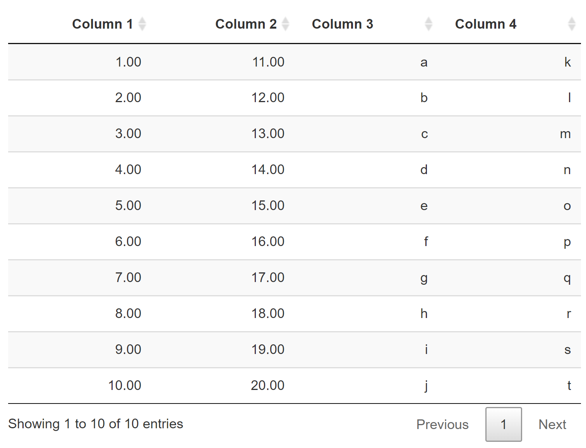
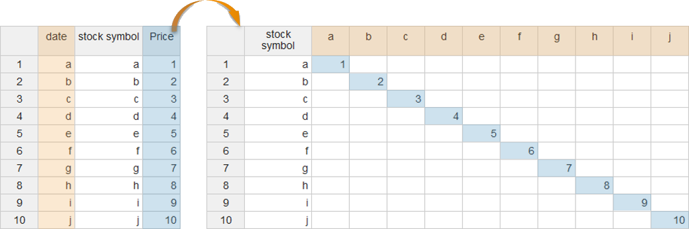
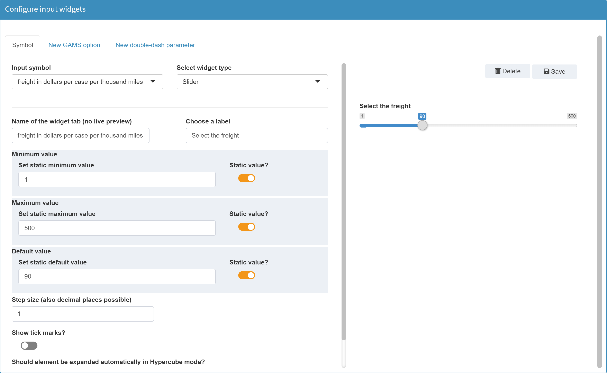
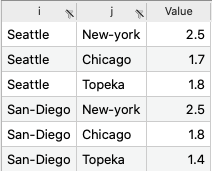

Changes made in the configuration are only effective after a restart of the MIRO application.
Configuration
Introduction
In this section you will learn how to customize GAMS MIRO. As you saw previously when creating your first app, MIRO launches without any further configuration. However, you will find that there are a lot of configuration possibilities to adapt MIRO to your specific model.
The configuration is done via a graphical configuration interface, with which you can create plots and widgets or change certain settings with a few mouse clicks, visually supported by a live preview. In addition, the configuration can also be done manually via a JSON file. In fact, all the graphical Configuration Mode does is create this JSON file.
The Configuration mode
This chapter shows how to configure MIRO using the graphical interface.
For those who feel more comfortable writing JSON, section Configuration via JSON shows
how to configure a MIRO app without using the graphical interface. However, we strongly recommend to use the Configuration mode, especially when you just started using GAMS MIRO.

 Visually, this mode is very similar to a classic MIRO app. The tabs on the left side lead to the following categories:
Visually, this mode is very similar to a classic MIRO app. The tabs on the left side lead to the following categories:
The Configuration mode is directly accessible via GAMS Studio:
In order to launch the Configuration mode via the command line, the environment variable MIRO_MODE=config needs to be set instead of MIRO_MODE=base. The other steps (see here) remain the same.
After starting, the following screen appears:
Note:
General settings
As the name suggests, general options can be set in this section (click on an item for more information).
General
+ Application title
+ Color theme to use
Allows you to choose between MIRO light and dark mode as well as the dynamic adaptation of the theme based on the user's system settings.
Light mode:

Dark mode:
+ Show log file in UI
Determine whether the GAMS log file is displayed in the section GAMS interaction or not.

+ Show listing (lst) file in UI
Determine whether the GAMS listing (lst) file is displayed in the section GAMS interaction or not.

+ Use custom MIRO log
You can write a custom MIRO log file and display this in MIRO. Per default, the GAMS log and listing (lst) files are visible in the GAMS interaction section. Besides these files generated by GAMS you can also write your own log (e.g. with the Put Writing Facility). If you already use your own report in your GAMS model, you can easily integrate it into MIRO with this option.
All you have to do is specify the name of this file. The file must be a text file and needs to be located in the MIRO working directory at the end of the model run in order to be included.
Tip:
In the general settings you can choose whether you want to see the GAMS log and/or the listing (lst) file in MIRO at all.
Example:
In this example we extend our transport model with a few lines of code for creating a report transport.dat:
File log /transport.dat/;
put log;
put '--------------------------------'/;
put ' Report'/;
put '--------------------------------'/;
put / / 'Transportation Model parameters' / /
'Freight cost ', f,
@1#6, 'Plant capacity'/;
loop(i, put @3, i.tl, @15, a(i)/);
put /'Market demand'/;
loop(j, put @3, j.tl, @15, b(j)/);
put / / 'Transportation Model Results' / / ;
loop((i,j), put i.tl, @12, j.tl, @24, x.l(i,j):8:4 /);
Now we want to integrate it into MIRO. In the Configuration mode we specify the name of the report file in the general settings:

The next time the model is solved, this report is displayed in the GAMS interaction section in MIRO:

Note:
Be careful with logs that are not written with every GAMS run, but only if, for example, a data test in the model fails. MIRO does not know if a log belongs to the current or an earlier run. If a log file was specified, MIRO looks into the working directory and includes this file after each GAMS run.
Data validation
The MIRO log is particularly suitable for the validation of input data. Checking the consistency of input data and providing reports when inconsistencies are found is a critical factor in avoiding end-user frustration.
If a certain syntax is followed in the MIRO log, data found to be invalid can be marked directly above the respective input data sheet in MIRO:

This works as follows:
In the Pickstock model we create, as in the previous transport example, a reporting file. We want to inform the user when we detect invalid price data. We classify a price as incorrect if it is
negative, i.e. < 0. Since the data validation should take place before solving the model, the code must be placed before the solve statement. If we find inconsistent data, we abort the execution with an error message.
* input validataion
set error01(date, symbol);
error01(date, symbol) = price(date, symbol) < 0;
file log / miro.log /;
put '------------------------------------'/;
put ' Data validation'/;
put '------------------------------------'/;
if(card(error01),
put log 'price:: No negative prices allowed!'/;
loop(error01(date, symbol),
put log / ' Symbol ' symbol.tl:4 ' has negative price at the date: ' date.tl:0;
);
abort "Data errors detected."
);
putclose log;
If the data validation log is integrated in MIRO, the following happens: If you now have a negative price in the input data and click solve, this negative price is detected in the data validation and the model run is aborted. Instead of remaining in the GAMS interaction section, MIRO now switches the view and displays the input table with the first validation error detected. The corresponding message specified in the log file is also displayed (see picture above).
The MIRO log file also displays further information about the incorrect data if defined accordingly:

This way, incorrect data can be quickly found and corrected by the user, before executing an expensive computation.
The syntax that must be used for MIRO to jump directly to the table with the incorrect data is as follows:
'symbolname:: Error message'
In the example above this was:
'price:: No negative prices allowed!'
The name of the symbol whose data is incorrect, followed by two colons, signals MIRO to jump to the table of the corresponding symbol if the model run is aborted. The specified error message that follows the colons is then displayed above the table.
+ Default scenario comparison mode
+ Generate graphs for each input sheet automatically (pivot tool)
+ Background color of row and column headers in pivot tables
+ Number of decimal places used for rounding output values
Scalars
+ Scalars that should not be displayed in the scalars table but can be used in graphs etc.
For some charts it may be desired to use additional (scalar) information. In the following example from the Pickstock model, the scalar output value "end of training phase" was integrated into the chart to mark the end of the training phase:

In this case you may not want to see the value in the scalars table, but it is required for this chart. With this option you can do exactly that, i.e. use scalar values in charts that are otherwise not visible in MIRO.
+ Should all input widgets (slider, dropdown menu, etc.) be aggregated on a single tab?
Logo
+ Upload a custom logo for your MIRO app: png/jpg file (best ratio: 4,6:1).
This option allows you to use your own logo for your MIRO application, which is displayed in the upper left corner.
README file
+ Create an individual start page
You have the possibility to integrate a README file into the MIRO application. Its content is displayed in the input section in the first tab and is therefore the first thing the user sees after starting the application. This tab can be used by the developer to introduce and explain the MIRO application or the underlying GAMS model before the user starts working with it.

Usage:
The readme file must be a markdown or HTML
document which is located in the model directory. The README option must be activated in the Configuration mode. Two options are available:
- README tab title (mandatory)
With this option you can customize the title of the README tab in the input section. Default: README - README file name (mandatory)
With this option you specify the name of the readme file that you want to display (minimum 4 characters).
The readme file can be created or edited directly in configuration mode:

Note:
If you want to include images in your readme file, they must be located in the folder static_<modelname> in your model directory. In the markdown/HTML file, the path of the images used must be pre-fixed with "static_<modelname>".
Symbol configuration: Naming, ordering, grouping
+ Naming
Under the heading Naming, the names of the GAMS symbols displayed in MIRO can be adapted. This includes the labels of the tabs displayed for each symbol as well as the table column headers.
- Specify symbol alias:
Specification of the labels of the symbol tabs.
- Specify column headers:
To adjust a column header, the corresponding element must be deleted and replaced with a new one.
+ Ordering
+ Tab grouping
Multiple tabs of input symbols (or output symbols) can be grouped together. All symbols in a group are displayed in a separate tab.
Example:
For the input data of the transport model, one might want to group the symbols with geodata together:

Which is displayed in the MIRO App as follows:

+ Use output data as input data
Scenario & data
+ Activate local data upload module?
+ Use a default scenario that will be loaded on startup?
+ Include a metadata sheet in the Excel file (when exporting a scenario)?
The metatdata sheet contains information about the user name, the scenario name and the time the scenario was created.

+ Include empty sheets in the Excel file?
+ Should users be allowed to add attachments to scenarios?
+ Duration the GAMS log and lst files are stored in the database (in days)
Computation
+ Remote Job execution (GAMS MIRO Server only)
+ Allow access to the temporary directory?
This option specifies whether all temporarily created files of the model run (like solution reports or the
lst and log files) can be accessed by the user.
If set to true, the files can be downloaded individually or as a ZIP archive with a click on the
 button.
button.

+ Save trace file with each GAMS run (Hypercube mode)
+ Specify extra command line arguments that GAMS will be called with
Analysis scripts
MIRO allows you to run custom analysis scripts in both Base and Hypercube mode. These scripts have to generate HTML output which will be displayed in the interface once the script finished. Scripts need to be placed in a folder called scripts_<modelname>; this is also where MIRO executes them (important when you use relative paths in your script).
+ Base mode
+ Hypercube mode
In the Hypercube mode, custom scripts can be used to run analyses on multiple scenarios at once. Let's consider the example that comes with the pickstock model: a Jupyter Notebook that tries to answer high-level questions like "How many training days should I use" and "How many stocks should I choose". You can find this script in scripts_pickstock/hcube_analysis.ipynb. First, we have to tell MIRO that we want to use a custom analysis script. The Configuration mode allows us to set everything up:

Each script has to have a unique identifier. The identifier is only used internally and should not be changed. What's displayed in the user interface is the script alias. The command to run is "jupyter", because we want to run a Jupyter Notebook. Note that in order for this to work, Jupyter needs to be installed on the client's machine and added to the PATH. Jupyter allows us to run and convert our notebook to HTML. In order to do so, we specify the relevant arguments. The resulting call would be: jupyter nbconvert --to html --execute hcube_analysis.ipynb.
Now that we set everything up, we can start testing our script. We select a few scenarios that we want to analyze, and click on "Analyze". The following dialog opens:

We select the script we want to run and click on "Start script". MIRO will now generate GDX containers with the data for each scenario you selected to be analyzed and store them inside: scripts_<modelname>. Additionally, MIRO writes a file: hcube_file_names.txt. This file simply lists the filenames of the gdx containers to be analyzed (separated by a newline). Once the script finished, the results are read by MIRO and displayed:

Configure tables
In this section you can customize the general configuration of input and output tables (global settings) as well as the individual settings of multi-dimensional input symbol tables.
Input tables (global settings)
+ Height of input tables (in px)
+ Restrict editing of tables? If activated, tables can not be modified by the user.
+ Highlight the column/row of current active cell
With these options you can enable/disable the highlighting of selected rows/columns in the table. Note that there is no live preview available for these options.

+ Default column stretching
+ Set custom column width
+ Enable column sorting in ascending/descending order
If activated, table columns can be sorted in ascending and descending order.

Note:
This functionality is not available in a table if the pivot option is used.
+ Enable manual column resizing
Enables/disables the manual setting of the column width by the user.

+ Enable table context menu (accessible via right mouse click)
The context menu (accessible by right-clicking in the table) allows you to access various functions, such as adding or deleting a table row, or undoing the last modifications.

Output tables (global settings)
+ Table style
Output tables can be changed regarding their design. Different designs are available. Example:
Table style: display (default)
Table style: compact

+ Include column filters
+ Number of items to display per page
+ Show row numbers?
+ Add export buttons?
The export buttons copy, CSV, Excel, PDF and print are available.
Note:
Please note that only the currently visible data is exported! If a symbol contains multiple table pages, using a button only affects the currently visible table page! It is recommended to use the native export functionality of MIRO instead.

Symbol tables
Example: Model Pickstock, parameter price
By default, every cell in the table is editable and rows can be inserted and removed. If you only want to allow your users to edit certain tables or even only certain columns within a table, you can customize the visualization for the underlying GAMS parameter:

In the above configuration, we have specified for the parameter Price that not the entire table, but only the two columns Date and Symbol should be read-only. In addition, the values in the table should be displayed as a heat map to visually illustrate strong price differences.
Available Options
The following options are available for a symbol table:
+ Name of the widget tab
With this option the tab name of the symbol is defined, see screenshot below. The default value of the element name is the explanatory text of the symbol.

+ Are large amounts of data stored in the table (i.e. more than 20,000 records)?
+ Should table be readonly?
+ Select a column to pivot
This option allows you to pivot a table column of a symbol, i.e. to have a new column from each of the elements in this column:

Unlike the table statement in the GAMS model itself (Table symbolname;), this option does not affect the data contract between GAMS and MIRO.
Hence, the columns of the symbol remain variable, since the symbol itself is communicated in list format.
The pivoting of the configured column then happens "live" in the MIRO application.
Variable columns do not only mean that the column elements can change their names. It is also possible to add or delete whole columns.
On the GAMS model side, this is equivalent to adding or deleting a set element of the affected index.
When using the pivot option, note the following:
- The table columns displayed with the pivot option can no longer be sorted alphabetically or numerically.
- Furthermore, it is not possible to add or delete columns in the symbol table if it is either read-only or displayed as a heatmap.
Now let's look at a case where we should probably avoid using this pivot functionality:
For this we look at the parameter Price of the Pickstock model:
Set date 'date'
symbol 'stockSymbol';
$onExternalInput
Parameter price(date,symbol) 'Price';
$offExternalInput

A table width quickly increases when the number of set elements of the header index gets large. A total of - for example - 30 stocks to be represented in a table would lead to 30 additional columns. In this case, the list view might be more clear.
+ Select columns to be readonly
+ Turn table into a heatmap?
Turns the table into a heatmap.

Configure widgets
Input widgets can be used instead of tables to enter scalar input data. Examples of such widgets include: sliders, dropdown menus, date selectors or checkboxes. In the configure widgets section of the Configuration mode you can configure widgets for:
The section Configure widgets looks as follows:

The symbol type to be configured can be selected at the top. The options are:
- Symbol
This option must be selected if we want to configure a GAMS symbol: scalars and 1-dimensional (singleton) sets.
Furthermore, already configured GAMS options and double dash parameters are listed here, so that the existing configuration can be changed / removed.
Note:After configuring a widget, the corresponding scalar is automatically removed from the Scalars table and rendered as a widget instead.
New GAMS option / New double dash parameter
As the name suggests, GAMS options and double-dash parameters can be configured here as an input widget.
Since those parameters are specified via the command line in GAMS, they can not be tagged in the GAMS code with$onExternalInput/$offExternalInput. So that they can be set for a GAMS run via MIRO, they must be explicitly specified in the configuration.If a GAMS option or a double dash parameter is set via MIRO, your GAMS model will automatically be called with these command line parameters. The values the user selected are therefore available to the GAMS model at compile time.
Tip:The GAMS options and double-dash parameters associated with a scenario are stored in MIRO's internal database. However, the information about them is lost when a scenario is exported as a GDX file. We therefore recommend using singleton sets instead of command line parameters. Both the element label and the element text of a set can be migrated to compile time variables using the Dollar Control Options eval.Set, evalGlobal.Set, and evalLocal.Set.
Read more here.
Example:
If we set the double dash parameter numberPeriods to 11 and for the GAMS option mip we select CPLEX from within MIRO, then the GAMS model is run with:gams <modelname>.gms --numberPeriods=11 MIP=CPLEXWarning:The following GAMS options are reserved by GAMS MIRO and can not be configured: idir1, idir2, curdir, trace, traceopt
The following widgets are available for scalar values:
Click on a widget to get more information


Example:
Let's now configure a widget for our transport model. For the scalar value freight a slider is a good choice.
From the list of available symbols we choose the desired scalar, select slider as widget tye and give it a label, which then appears above the slider.
Next, we specify the upper and lower bounds of the slider, the default value as well as the step size.

When we are satisfied with the selected configuration, we click "save". A confirmation that the configuration has been updated successfully will appear:

Done!
Configure graphs
Besides the default tabular format, multidimensional GAMS symbols can be visualized as graphs. GAMS MIRO offers comprehensive visualization options. A lot of plotting types are available and only need to be configured, i.e. adapted to your model-specific data.
If you want to configure a graphic for a GAMS symbol, you have to be aware of how many dimensions your GAMS symbol has, as this influences the type of graph to choose. GAMS symbols sometimes have many dimensions. Different chart types allow you to visualize a different number of dimension. Whereas a pie chart allows you to visualize two dimensions - a numerical one that defines the area of the slices and a categorical one that defines the labels of the slices - a bar chart allows three dimensions to be visualized: a numerical dimension that defines the height of the bars, a categorical one that defines the discrete set of bars on the x-axis, and another categorical one that defines the color of the bars. In fact, we could even display a fourth, numerical dimension that defines the width of the bars.
As an example we can look at the parameter d(i,j) 'distance in thousands of miles' in the model transport. In addition to the domains 'i' - the set of plants - and 'j' - the set of markets - there is the value column, i.e. a total of 3 dimensions:

We just learned that bar charts allow us to visualize 3 dimensions, so let's choose a bar chart:

What if we had a fourth domain, e.g. another categorical dimension? A scatter plot allows us to visualize a forth dimension in the form of the marker type (e.g. cirle, square, triangle etc.).
The more dimensions we try to plot in one chart, the harder it is to understand what is actually going on. Instead of trying to plot as many dimensions as possible in a single chart, we should think about reducing the number of dimensions. One way to do this is to animate our chart (e.g. to show how our data changes over time). Another way is to use a filter that allows us to select a particular slice of our data. Both of these options are supported by MIRO!
The following section shows some examples for different chart types you can use in MIRO. It is not useful to describe all possible options MIRO supports. Instead, you should just explore it yourself! Start the Configuration mode and play around with the data until you get a satisfactory result.
Note:
Currently already configured graphics are not preloaded at the start of the Configuration mode. This means that if you want to make changes to an existing graphic after restarting the Configuration mode, you must reconfigure it from the beginning.


Tip:
To create graphics that are perfectly tailored to your data and not available in MIRO yet, you can also use MIRO's R-API. More information can be found here.
Database management
Create database backups, restore a database, remove database tables.
Warning:
Deleting data from the database cannot be undone!

Options not available in Configuration mode
With the Configuration mode we pursue the goal that a user can completely configure a MIRO application without having to write any JSON code. However, there are a few advanced options that are not yet available in the Configuration mode and will have to be configured manually when desired. The following section describes these options.
+ Remote data import and export
+ Custom input widgets
Configuration via JSON files
The entire configuration of MIRO is done via JSON files. After the first start of a MIRO app, the following files are located in <modeldirectory>/conf_<modelname>:
<modelname>_io.json
This file describes the data contract between MIRO and GAMS and is generated automatically each time MIRO is run in development mode. All GAMS symbols that are marked in your GAMS model with the$onExternalInput/$offExternalInputand$onExternalOutput/$offExternalOutputtags are listed here. You won't ever have to modify this file!-
<modelname>.json
All the configuration of MIRO happens in the other JSON file <modelname>.json, e.g. transport.json. When you use the Configuration Mode to configure your app, this file is generated and modified. Here you can customize the general appearance of MIRO, the functionality, the language and much more. Furthermore, all the graphics and widgets are specified here. If you're using a version control system like Git, you should check this file in to keep track of any changes made to the configuration of your app.
Note:
If you don't start MIRO via GAMS Studio but via the command line, the JSON files are not created automatically. Read more about this here.

In case you want to change the language of MIRO or display a scalar input symbol as a slider, this information must be stored in the <modelname>.json file in JSON syntax. When you first launch MIRO for a new model, the <modelname>.json file is almost empty:
{}Each adjustment you want to make must be captured within the curly braces of this file.
To ensure that the configuration is correct in terms of syntax and content, all JSON files are validated against schema in the background.
Only if the validation is successful the application starts. If a schema is violated, an error message is displayed.
The schemas are located in <GAMSRoot>/miro/conf. For the <modelname>_io.json this is the schema <GAMSRoot>/miro/conf/io_config_schema.json and for the <modelname>.json the schema <GAMSRoot>/miro/conf/config_schema.json is used.
Since the latter file is used for the configuration, only the corresponding schema is of interest. You can have a look at it here.
Tip:
In the sections on configuring widgets and charts, you can also find examples of what the configuration looks like in JSON.
Example: tables
Let's get back and extend our demo model transport. We will do this by adjusting the file transport.json in order to to adapt MIRO to our needs.
GAMS MIRO comes with several options on how you can feed your model with input data. By default, GAMS input parameters, sets and scalars are displayed in an editable table:

The corresponding GAMS declaration statement looks like this: Parameter d(i,j) 'distance in thousands of miles';.
By default, every cell in the table is editable and rows can be inserted and removed. If you only want to allow your users to edit certain tables or even only certain columns within a table, you can customize the visualization for the underlying GAMS parameter.
You do so by adding this kind of information to the transport.json file. For example, if we decide that the table for our parameter d should not be editable, this information needs to be added to our JSON file as follows:
{
"inputWidgets": {
"d": {
"widgetType": "table",
"readonly": true
}
}
}Example: scalars
As with all MIRO customizations, the information about the type of visualization of a GAMS scalar is configured via the file <modelname>.json.
Let's get back to our transport app. In the previous section we configured the table of parameter d so that it is no longer editable. We achieved this by writing the corresponding information into the transport.json file.
Now we extend the configuration of our app further by adding information about how to display the scalar value f ('freight in dollars per case per thousand miles'). Instead of displaying it in a table, we want to use a slider:
{
"inputWidgets": {
"d": {
"widgetType": "table",
"readonly": true
},
"f": {
"widgetType": "slider",
"alias": "Freight in dollars per case per thousand miles",
"label": "Select the freight costs",
"min": 1,
"max": 500,
"default": 90,
"step": 1
}
}
}When we restart our app, the scalar is now automatically removed from the Scalars table and instead rendered as a separate widget:

In the sections on widgets and charts you will find a JSON example for each widget or chart type.
Command line parameters
We have already mentioned the possibility of setting GAMS command line parameters via MIRO.
Since GAMS Options and Double Dash Parameters are specified via the command line in GAMS, they can not be tagged in the GAMS code with $onExternalInput
/ $offExternalInput
. To be able to set them from MIRO, they can be specified in the <modelname>.json file. In order for MIRO to recognize whether your symbol is a double dash parameter or a GAMS option, you must prefix the symbol name with either _gmspar_ for double dash parameters or _gmsopt_ for GAMS options.
Note:
Command line parameters can not be displayed as a table, but only as a widget. Both, GAMS options and double-dash parameters can be displayed as a slider, dropdown menu, checkbox, text input or numeric input. For double-dash parameters date(-range) selector and slider range are also available.
Let's assume you want MIRO to call your GAMS model with the double dash parameter --numberPeriods, which can be set to a value between 1 and 14. You also want to be able to select the MIP solver to use. As you have licenses for CPLEX, Gurobi and XPRESS, you can only use either of these three solvers. Thus, your <modelname>.json file could look as follows:
{
"inputWidgets": {
"_gmspar_numberPeriods": {
"widgetType": "slider",
"alias": "Number of time periods",
"label": "Select the number of time periods to solve",
"min": 1,
"max": 14,
"default": 11,
"step": 1
},
"_gmsopt_mip": {
"widgetType": "dropdown",
"alias": "MIP Solver",
"label": "Solver to use for MIP models",
"choices": [
"CPLEX",
"GUROBI",
"XPRESS"
],
"multiple": false,
"selected": "CPLEX"
}
}
}The resulting interface in MIRO now looks as follows:

Advanced topics
Widgets with ranges
Tip:
In the MIRO Base mode, widgets with ranges are only available for double-dash parameters!
We covered the basics of how to use widgets for your scalar inputs as well as command line parameters. Let's now take a look at how widgets that return two scalars instead of one are treated. Those widgets include a slider with two handles (also referred to as a slider range) and a date range selector:
The lower value (or starting date of the date range) is postfixed with _lo and the upper value (or end date of the date range) is postfixed with _up. This means that if you specified a slider range for your double dash parameter --RANGE, you can access the lower value of the range with %RANGE$LO% and the upper value with %RANGE$UP% while %RANGE% will not be set at all. Let's look at the following example: We would like to specify a time window that we want to fetch stock data for. Thus, we define a new double dash parameter --TW that we want to be visualized in the form of a date range selector. We add the following JSON snippet to our <modelname>.json configuration file:
{
"inputWidgets": {
"_gmspar_TW": {
"alias": "time window",
"widgetType": "daterange",
"label": "Time window",
"start": "2018-02-20",
"end": "2019-02-20",
"min": "2017-01-01",
"max": "2019-12-31",
"autoclose": true,
"noHcube": true
},
[...]
In our model, we can access the lower and upper value of this slider via the compile time variables %TW$LO% and %TW$UP%.
Dependencies among widgets
One special feature of GAMS MIRO is that you can define interdependencies between different parameters. Scalars can take two forms of dependencies to other parameters: They can feed their attributes from them; and they can manipulate the content of those parameters. Let's look at an example: we have a set of scenarios that can be selected as well as a singleton set with the currently selected/active scenario. A singleton set is suited to be represented as a dropdown menu, hence we choose that type of widget here. We would like to filter our parameters based on the currently selected scenario so that we only see data that is relevant for this scenario (this type of dependency is also referred to as a backward dependency). This means that in case scenario 1 is selected via our dropdown menu, we only want to display data relevant to scenario 1 to the user. Additionally, we want the choices of our dropdown menu to be the elements of all available scenarios (also referred to as a forward dependency).

Similar dependencies can also be considered for sliders. An example is the pickstock model. Here, the number of stocks you can select for your portfolio can not be larger than the number of stocks in your dataset. Similarly, the number of days you can use to train your model must not be larger than the number of days you have in the stock price dataset. The slider attributes - namely the maximum value that can be selected - should change according to the price data the user uploads. Thus, we also have forward dependencies here.
A table that shows the currently supported forms of dependencies for the different input widgets is shown below.
| Input widget type | Forward dependency | Backward dependency | Example model |
|---|---|---|---|
| Dropdown menu | - | ||
| Slider | pickstock | ||
| Checkbox | - | ||
| Date selector | - | ||
| Daterange selector | () | - |
Note:
You need dependency support for a type of widget which is currently not available? Please feel free to contact us at: miro@gams.com. You added dependency support for another type of widget yourself? Send us a pull request on GitHub!
Custom Graphics
GAMS MIRO allows you to use your own custom renderers for your datasets. In this section we will show you how to create really sophisticated graphics that can not be configured with the build-in Configuration mode of GAMS MIRO.
Note:
The following example shows how a map can be created via custom renderer. Note, that basic maps can be configured in the Configuration mode. However, the following example shows how to use the R API for customized graphics in general.

In order to visualize a dataset, you will need to write two functions: a placeholder where your graphs etc. will later be rendered as well as the rendering function itself. To learn more about the concepts of this dual component approach, visit the website for the R Shiny framework that GAMS MIRO is based upon: https://shiny.rstudio.com/. In particular, we are using Shiny Modules to realize the interface between MIRO and your custom renderer functions. The template for the two components of every custom renderer is as follows:
<rendererName>Output <- function(id, height = NULL, options = NULL, path = NULL){
ns <- NS(id)
}
render<rendererName> <- function(input, output, session, data, options = NULL, path = NULL, ...){
}
Note that you need to replace <rendererName> with your preferred name. Let's go through this code step by step. As mentioned, for each custom renderer we need to specify two functions: one that generates the the placeholder and one that fills this placeholder with data. The name of the placeholder function must be postfixed with "Output" and the name of the function that specifies the actual rendering must be prefixed with the keyword "render". Let's get back to our transport example. We would like to see the flow of goods visualized on a map. We now write our own custom renderer which we name: transportMap. Thus, our initial template looks like this:
transportMapOutput <- function(id, height = NULL, options = NULL, path = NULL){
ns <- NS(id)
}
renderTransportMap <- function(input, output, session, data, options = NULL, path = NULL, ...){
}
Note:
R is case sensitive and the first letter after the render keyword needs to be uppercase! Thus, if the name of your renderer starts with a lowercase letter, you need to convert it to uppercase in the render* function.
Note:
Custom renderer scripts must be located in a folder named: renderer_<modelname> in your model directory. You can name these .r files as you like.
Both functions take a number of parameters. Let's start with the placeholder function: Each custom renderer has its own ID. In order to avoid name collisions with other custom renderers or functions of GAMS MIRO, we need to prefix our input and output elements with this ID. How should we prefix our custom input and output functions, though? Fortunately, Shiny provides us with the function: NS(). This function takes the ID of our custom renderer as its input and returns a function (functions that return functions are often called closures in R) that does the prefixing for us. Thus, whenever we want to specify a new input or output element, we simply hand the ID we would like to use for this element over to this prefixing function (which in our case is bound to the ns variable). We can also specify a height for our renderer as well as the path where the renderer files are located. We can also pass additional options to our renderer functions.
Let's get back to our example. As we would like to visualize our optimized schedule on an interactive map, we choose the popular Leaflet library. Fortunately, there is already an R/Shiny interface for this library: Leaflet for R. This R package comes with the two functions: leafletOutput() that generates the placeholder and renderLeaflet() that renders a Leaflet map object created by the leaflet() function which takes our dataframe as its first argument. So let's put the pieces together and extend our code:
transportMapOutput <- function(id, height = NULL, options = NULL, path = NULL){
ns <- NS(id)
leafletOutput(ns("map"), height = height)
}
renderTransportMap <- function(input, output, session, data, options = NULL, path = NULL, ...){
output$map <- renderLeaflet(leaflet(data))
}Note that we used the aforementioned ns() function to prefix the ID ("map") that we chose for our Leaflet element. Just like any other placeholder element, the function leafletOutput() generates an element that can be accessed via the list-like output object.
Inside our rendering function we assign this object the Leaflet map that is created by the renderLeaflet() function. In case you find the whole concept of having an output function, a rendering function, an output object etc. still very confusing, you should take a look at the offical tutorial series for the Shiny framework.
To summarize: elements that generate data can be accessed by the input object; elements that transform data to some form of visualization via the output object and any user-specific information via the session object.
The data that you want to visualize is supplied to your rendering function by the data argument - an R tibble, a data structure that is very similar to a Data Frame. The function argument path is a string (a one-dimensional character vector) that specifies the absolute path to your renderer_<modelname> directory. This is useful if you want to include external files in your custom renderer functions. Optional parameters that you want to pass to the renderer can be accessed via the argument options - a (nested) list.
Now that we are familiar with the template that every custom renderer builds upon, we are still missing one fundamental concept so that we can use our custom renderer: binding the renderer to dataset(s) we wish to visualize.
This binding of GAMS parameter to renderer function is specified - just like any other renderer binding - in the <modelname>.json file; more precisely the dataRendering section. Let's assume that in our transportation example the GAMS parameter that specifies the optimal schedule is defined as optSched(lngp, latp, lngm, latm, plant, market) where (lngP,latP) and (lngm, latm) are the coordinates of the plants and markets respectively. Our transport.json file should then look like this:
{
"dataRendering":{
"optSched":{
"outType":"transportMap",
"height":"700",
"options":{
"title":"Optimal transportation schedule"
}
}
}
}As you can see we bound the GAMS parameter optSched to our new custom renderer transportMap. Furthermore, we specified a parameter: title that can be accessed by our custom renderer via the options list.
If we decided to run our MIRO app now, we still would not be able to see anything other than a blank area. Thus, we will need to fill our renderer with some life:
transportMapOutput <- function(id, height = NULL, options = NULL, path = NULL){
ns <- NS(id)
tagList(
textOutput(ns("title")),
leafletOutput(ns("map"))
)
}
renderTransportMap <- function(input, output, session, data, options = NULL, path = NULL, ...){
output$title <- renderText(options$title)
output$map <- renderLeaflet(leaflet(data) %>%
addTiles() %>%
addMarkers(~lngp, ~latp, label = ~plant)
)
}We have added a new placeholder for the title. Note the use of the tagList() function. Since every R function has a single return value which is either the last evaluated expression of the function or the argument to the first return() function that is encountered in the function body, we need to return a list object. A tagList() is simply a list with an additional attribute to identify that the elements are html tags.
Within our rendering function, we set the title, add the default OpenStreetMap tiles as well as some markers for our plants.
Note:
The syntax ~lngp that you see here is simply a shorthand for data$lngp - the pipe operator a(x) %>% b(y) a shorthand for tmp <- a(x); b(tmp, y)

You now know everything you need in order to get started writing your own custom renderers! Congratulations! In case you create a new renderer that you would like to share so that others can benefit from your work as well, please contact us!
Language Files
GAMS MIRO comes with the ability to change the preferred language. Setting your preferred language results in MIRO embedding the corresponding language file where all the language specific components are specified via JSON syntax. MIRO currently ships with three of those language files: English, German and Chinese. If you would like to add another language to this list, you are more than welcome to translate one of the existing language files. The language files are located at: <GAMSRoot>/miro/conf/en.json and are validated against the JSON Schema file: <GAMSRoot>/miro/conf/language_schema.json. Note that there are sometimes placeholders in the language files. Let's take the error message: "The value '%s' for the slider: '%s' is not of numeric type." for example. %s will then be replaced with the value and name of the slider by MIRO. Thus, if you create a new language file, be sure to include these placeholders there!
If you would like to contribute your language file, so that other people can profit from your work as well, send us an email: miro@gams.com.